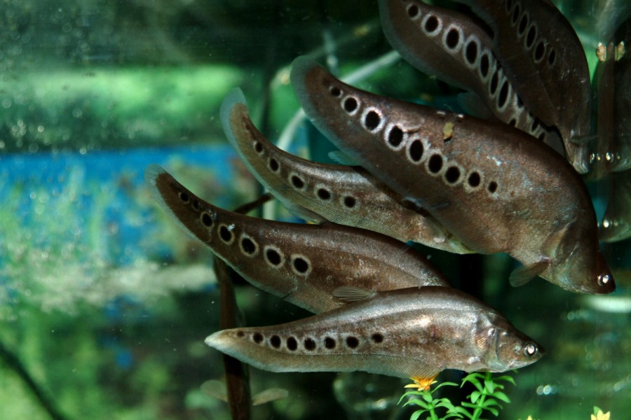

Dengan berat tubuh dapat mencapai 1 kg dan panjang tubuh mencapai 87,5 cm, cukup besar memang untuk ukuran air tawar. Bentuk tubuh ikan ini seperti pisau, sedang makanan kesukaannya yaitu ikan-ikan kecil serta udang. Habitat asli dari ikan ini adalah di perairan wilayah air tawar di wilayah Jawan dan Kalimantan.